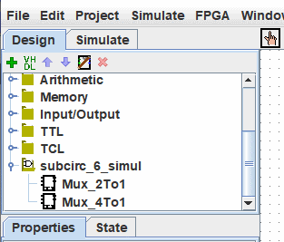

ספריות לוגיסים
כל פרויקט Logisim הוא אוטומטית ספרייה שניתן לטעון לפרויקטים אחרים של Logisim: פשוט שמור אותו
לתוך קובץ ולאחר מכן טען את הספרייה בתוך פרוייקט אחר עם התפריט | Projet |→| טען ספרייה |→| logisim-evolution
ספריה... |. כל המעגלים שהוגדרו בפרויקט הראשון יהיו זמינים אז כמעגלי משנה
עבור השני. תכונה זו מאפשרת לך לעשות שימוש חוזר ברכיבים נפוצים בפרויקטים ולחלוק מועדפים
רכיבים עם החברים שלך (או התלמידים).
מתחת לפרויקט שלנו שנטען כספרייה זמין בחלונית הניווט.

הערה: אסור שהספרייה תכיל מעגל בעל שם זהה לזה של מעגל שכבר קיים בפרוייקט.
לכל פרויקט יש מעגל ראשי ייעודי, אותו ניתן לשנות כדי להתייחס למעגל הנוכחי באמצעות תפריט | פרויקט |→| הגדר כמעגל ראשי |. ה המשמעות היחידה של זה היא שהמעגל הראשי הוא זה שמוצג כאשר אתה פותח לראשונה את פּרוֹיֶקט. לשם ברירת המחדל ("הראשי") של המעגל בקובץ שזה עתה נוצר אין משמעות כלל, ואתה אתה יכול להרגיש חופשי למחוק או לשנות את שם המעגל הזה.
עם ספריית Logisim טעונה, אתה רשאי לצפות במעגלים ולתפעל את המצבים שלהם, אבל Logisim למנוע ממך לשנות את עיצוב המעגלים ונתונים אחרים המאוחסנים בקובץ.
אם אתה רוצה לשנות מעגל בספריית Logisim טעונה, עליך לפתוח אותו בנפרד בתוך Logisim. ברגע שתשמור אותו, הפרויקט השני אמור לטעון באופן אוטומטי את הגרסה ששונתה באופן מיידי; אבל אם זה לא, אתה יכול ללחוץ לחיצה ימנית על תיקיית הספרייה בחלונית הסייר ולבחור | טען מחדש את הספרייה |.
הבא: מדריך למשתמש.